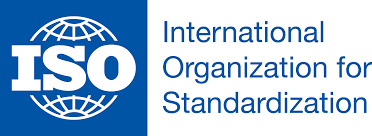

Normas y Estándares de calidad para el desarrollo de Software
Introducción
Los estándares de calidad de software hacen parte de la ingeniería de software, utilización de estándares y metodologías para
el diseño, programación, prueba y análisis del software desarrollado, con el objetivo de ofrecer una mayor contabilidad,
mantenibilidad en concordancia con los requisitos exigidos, con esto se eleva la productividad y el control en la calidad de
software, parte de la gestión de la calidad se establecen a mejorar su eficacia y eficiencia.
En un escenario en el que los sistemas de software se desarrollan y construyen por terceros proveedores, el contratante del
servicio, como primer receptor del mismo, en muchos casos debe confiar en el buen hacer del proveedor seleccionado,
especialmente si nos dispone de los medios apropiados para auditar la entrega y en su caso argumentar defectos en el proceso
de desarrollo.
En general, una vez validado que el sistema responde a los principales requisitos funcionales especificados, el usuario realizará
las pruebas de aceptación, corrigiendo los errores encontrados y tas pasándose al fin del entorno de producción. Sin embargo,
en muy pocas ocasiones se validan de manera rigurosa los requisitos funcionales y los no funcionales, o se ejecutan
validaciones que aseguren que el sistema es lo suficientemente robusto y estable como para pasar a un entorno productivo con
las garantías adecuadas.
NORMAS ISO/IEC

ISO 12207 – Modelos de Ciclos de Vida del Software.
Estándar para los procesos de ciclo de vida del software de la organización, Este estándar se concibió para aquellos interesados
en adquisición de software, así como desarrolladores y proveedores. El estándar indica una serie de procesos desde la
recopilación de requisitos hasta la culminación del software.
Norma ISO/IEC 9126
La norma ISO/IEC 9126 de 1991, es la norma para
evaluar los productos de software, esta norma nos
indica las características de la calidad y los
lineamientos para su uso, las características de
calidad y sus métricas asociadas, pueden ser útiles
tanto como para evaluar el producto como para
definir los requerimientos de la calidad y otros usos.
Esta norma definida por un marco conceptual basado
en los factores tales como Calidad del Proceso,
Calidad del Producto del Software y Calidad en Uso;
según el marco conceptual, la calidad del producto, a
su vez, contribuye a mejorar la calidad en uso.
norma ISO/IEC 9126 define la calidad en uso como la perspectiva del usuario de la calidad del producto software cuando
éste es usado en un ambiente específico y un contexto de uso específico. Éste mide la extensión para la cual los usuarios
pueden conseguir sus metas en un ambiente particular, en vez de medir las propiedades del software en sí mismo.
SPICE
Es un estándar importante iniciativa internacional para apoyar el desarrollo de una Norma Internacional para la Evaluación de
Procesos de Software. El proyecto tiene tres objetivos principales: Para desarrollar un proyecto de trabajo para un estándar
para la evaluación de procesos de software. Para llevar a cabo los ensayos de la industria de la norma emergente. Para
promover la transferencia de tecnología de la evaluación de procesos de software en la industria mundial del software a nivel
mundial.
El estándar SPICE creciente en número de métodos de evaluación disponibles, y la creciente utilización de la técnica comercial
en áreas sensibles, fueron los factores clave que impulsaron el desarrollo y la aceptación de una propuesta para desarrollar un
estándar internacional para la evaluación de procesos de software.
Una Norma Internacional sobre Evaluación de Procesos de Software ofrecerá los siguientes beneficios a la industria y los
usuarios del software: Beneficios para la Industria del Software Los proveedores de software se someterá a un solo esquema de
proceso de evaluación. Las organizaciones de desarrollo de software tendrán una herramienta para iniciar y sostener un
proceso continuo de mejora. Los directores de programas tendrán un medio para garantizar que su desarrollo de software está
en consonancia y apoya, las necesidades comerciales de la organización.
CMMI
¿ Que es la CMMI ?
Es un modelo de mejora de los procesos de construcción de software que provee los elementos necesarios para determinar su
efectividad. Este modelo puede ser utilizado como guía para mejorar las actividades de un proyecto, área u organización, ya que
proporciona un marco de referencia para evaluar la efectividad de los procesos actuales, facilitando con ello la denición de
actividades, prioridades y metas para garantizar la mejora continua. Es el estándar más conocido para la mejora de procesos en
mejora de procesos para el desarrollo de proyectos, gestión de proveedores y gestión de servicio.
El CMMI establece cinco niveles de madurez los cuales son: Nivel 0: Incompleto El proceso no se realiza, o no se consiguen los
objetivos.
Nivel 1
Inicial o ejecutando: Este es el nivel en donde todas las empresas que no tienen procesos, es donde el proceso se ejecuta y
se logra su objetivo, así sea fuera de presupuesto y de cronograma.
Nivel 2 Repetible: Se da cuando el éxito de los resultados obtenidos se puede repetir.
Nivel 3
Definido: Significa que la forma de desarrollar proyectos está definida, establecida, documentada y que existen métricas.
4 Administrado: Los proyectos usan objetivos medibles y cuantificables para alcanzar cubrir las necesidades de los
clientes y la organización. Es decir, se usan métricas para gestionar la organización.
5 Optimizado: Los procesos de los proyectos y de la organización están orientados a la mejora de las actividades, que
mediante métricas son identificadas, evaluadas y puestas en práctica.
IEEE (Institute of Electrical and Electronics Engineers)
¿ Que es la IEEE ?
Es un método de establecimiento y mejora del trabajo en equipo para procesos software, una asociación técnico-profesional
mundial dedicada a la estandarización, entre otras cosas. Su creación se remonta al año 1884, contando entre sus fundadores a
personalidades de la talla de Thomas Alva Edison, Alexander GrahamBell y Franklin Leonard Pope. En 1963 adoptó el nombre de
IEEE al fusionarse asociaciones como el AIEE (American Institute of ElectricalEngineers) y el IRE (Institute of Radio Engineers).
PSP
¿ Que es PSP ?
El proceso personal del software es un método de autoconocimiento, que permite estimar cuánto se tarda un individuo en
realizar una aplicación de software, para así calcular el presupuesto y asegurar la operatividad de los desarrollos. PSP se
Concentra en las prácticas de trabajo de los ingenieros en una forma individual.
El PSP se caracteriza porque es de uso personal y se aplica a programas pequeños de menos de 10.000 líneas de código. El PSP
sirve para producir software de calidad, donde cada ingeniero debe trabajar en la necesidad de realizar trabajo de calidad.
TSP
¿ Que es TST ?
Team Software Process es un método de establecimiento y mejora del trabajo en equipo para procesos de software. Es un
proceso para equipos de software, a través del cual se contribuye equipos de alto rendimiento, capaces de comprometerse con
el plan y administración del desarrollo de software, así como de producir productos de calidad y a bajo costo, logrando el mejor
desempeño posible.
Moprosoft
¿ Que es Moprosoft ?
Es una norma mexicana, basada en procesos para las industrias de software, la cual sirve para estandarizar operaciones y
prácticas en gestión de ingeniería de software, para así elevar la capacidad de las organizaciones de ofrecer servicios con
calidad y alcanzar niveles internacionales de competitividad. Está enfocado a las Pymes de la Industria de Software en México.
Está dirigido a las empresas o áreas internas dedicadas al desarrollo y/o mantenimiento de software.